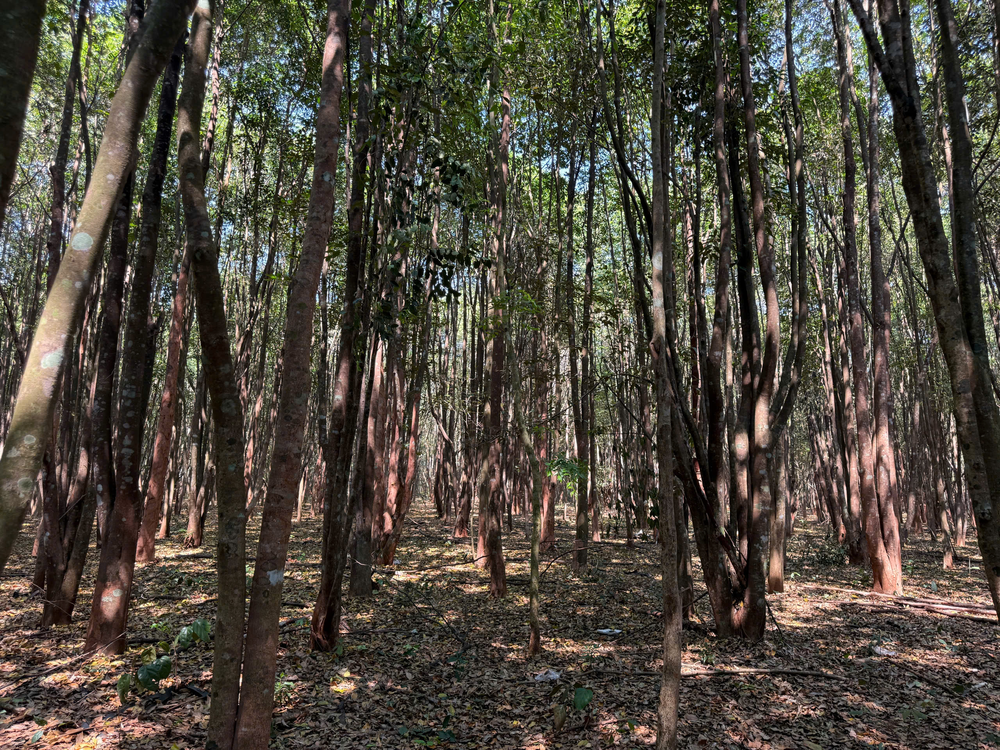

Tổ chức xã hội nghề nghiệp kết nối, bảo tồn và nâng tầm giá trị Trầm Hương Việt Nam — di sản nghìn năm của đất nước hình chữ S.
Hội Trầm Hương Việt Nam (VAWA — Vietnam Agarwood Association) được thành lập ngày 11/01/2010 theo Quyết định số 23/QĐ-BNV của Bộ Nội vụ. Là tổ chức xã hội nghề nghiệp tự nguyện, phi lợi nhuận, hoạt động theo Điều lệ và pháp luật Việt Nam.
Sứ mệnh của Hội là kết nối cộng đồng doanh nghiệp, nghệ nhân, nhà nghiên cứu trong và ngoài nước; bảo tồn nguồn gen dó bầu quý và tri thức truyền thống; nâng tầm thương hiệu Trầm Hương Việt trên trường quốc tế.
"Trầm Hương Việt Nam — không chỉ là nguyên liệu, mà là di sản văn hoá nghìn năm cần được gìn giữ và lan toả."

Theo Điều lệ sửa đổi, bổ sung 2023
59 hội viên VIP · doanh nghiệp · nghệ nhân từ khắp Việt Nam
Trở thành hội viên để đồng hành cùng cộng đồng doanh nghiệp Trầm Hương hàng đầu Việt Nam — kết nối chuyên gia, tham gia sự kiện, được chứng nhận sản phẩm và xúc tiến thương mại quốc tế.
Trở thành hội viên